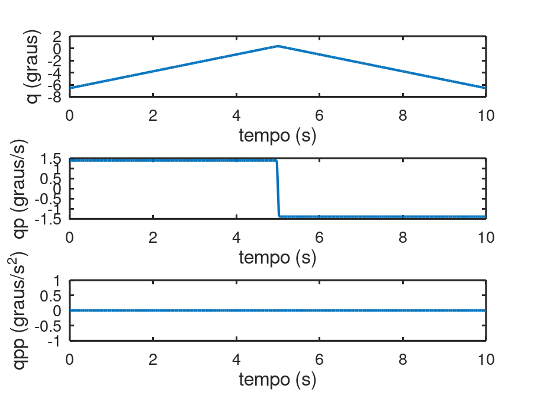
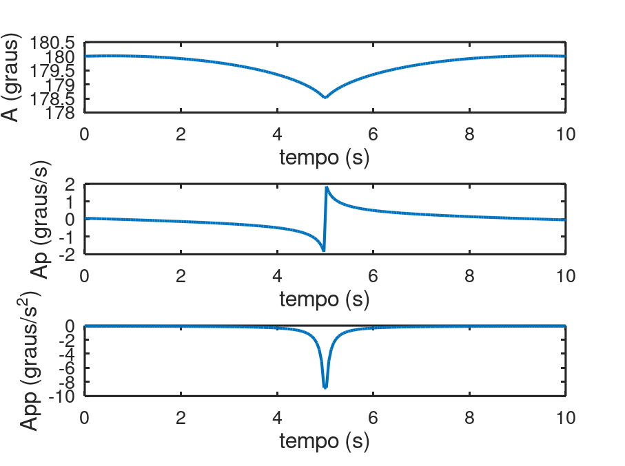
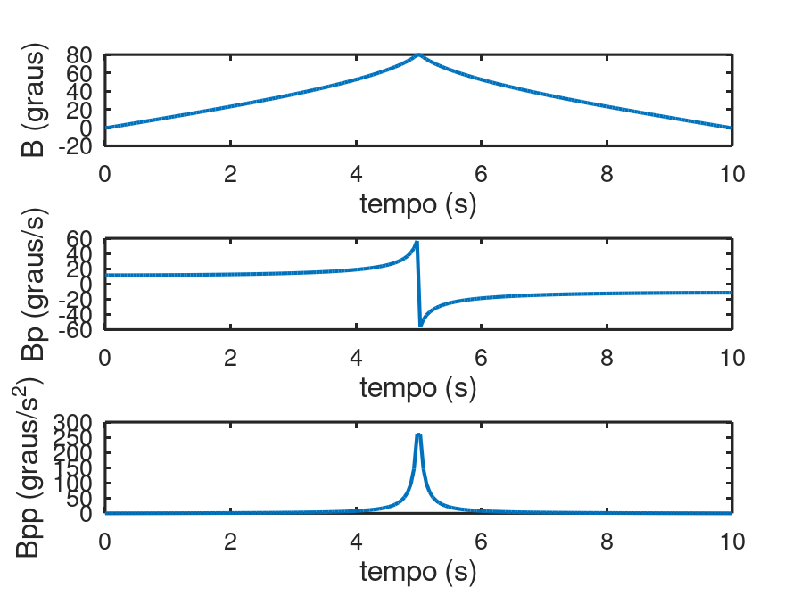
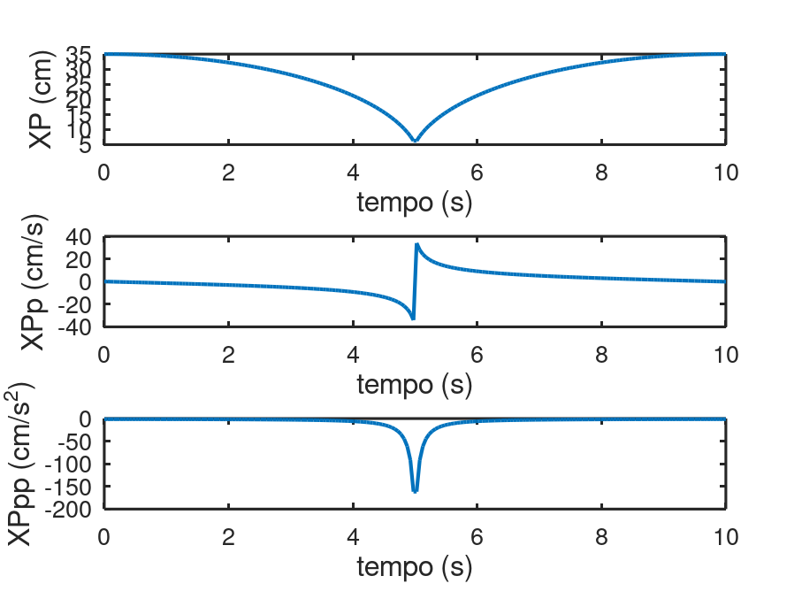
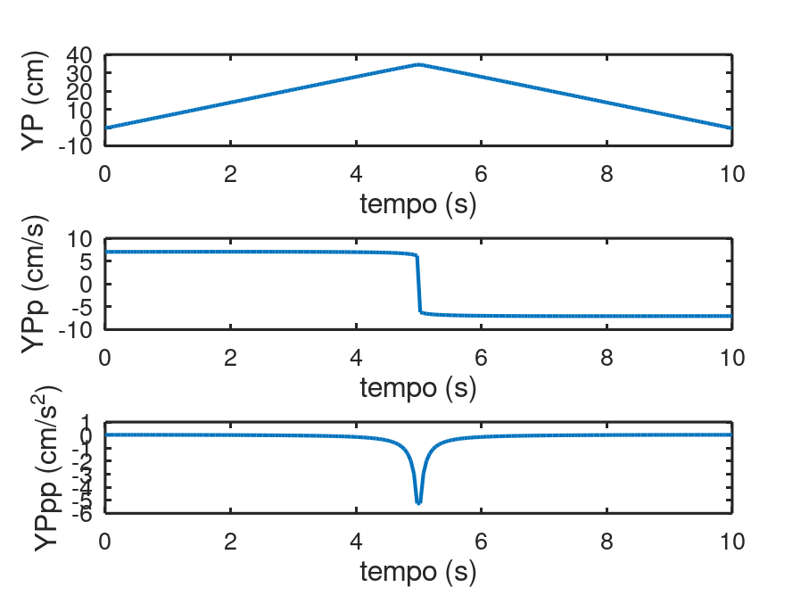

cinematicalinear
Mecanismo
clear
clc
close all
load functions.mat
ti = 0;
tf = 10;
N = 200;
qi = -6.5;
qf = 0.45;
q0 = deg2rad(qi);
qp0 = (deg2rad(qf) - deg2rad(qi))/((tf-ti)/2);
qpp0 = 0;
t = linspace(ti,tf,N);
q = zeros(N,1);
qp = zeros(N,1);
qpp = qpp0*ones(N,1);
q(1) = q0;
qp(1) = qp0;
for i = 2:N
if i <=100
qp(i) = qp0 + qpp(i-1)*t(i-1);
q(i) = q0 + qp(i-1)*t(i-1) + (qpp(i-1)*(t(i-1)^2))/2;
else
qp(i) = -qp0;
q(i) = q(100) - qp0*t(i-100);
endif
endfor
qs = {q, qp, qpp};
[as,bs,xps,yps] = analisecinematica(q,qp,qpp,t,N,Ff,iJf,Kf,Lf,Pf,Kpf,Lpf);
y = {rad2deg(qs{1}), rad2deg(qs{2}), rad2deg(qs{3})};
yl = {"q (graus)","qp (graus/s)", "qpp (graus/s^2)"};
xl = "tempo (s)";
plotabonito(t,y,yl,xl,3,1, "imagens/qlinear.png");
y = {rad2deg(as{1}), rad2deg(as{2}), rad2deg(as{3})};
yl = {"A (graus)","Ap (graus/s)","App (graus/s^2)"};
xl = "tempo (s)";
plotabonito(t,y,yl,xl,3,1, "imagens/Alinear.png");
y = {rad2deg(bs{1}), rad2deg(bs{2}), rad2deg(bs{3})};
yl = {"B (graus)", "Bp (graus/s)", "Bpp (graus/s^2)"};
xl = "tempo (s)";
plotabonito(t,y,yl,xl,3,1, "imagens/Blinear.png");
y = {xps{1}, xps{2}, xps{3}};
yl = {"XP (cm)", "XPp (cm/s)", "XPpp (cm/s^2)"};
xl = "tempo (s)";
plotabonito(t,y,yl,xl,3,1, "imagens/XPlinear.png");
y = {yps{1}, yps{2}, yps{3}};
yl = {"YP (cm)", "YPp (cm/s)", "YPpp (cm/s^2)"};
xl = "tempo (s)";
plotabonito(t,y,yl,xl,3,1,"imagens/YPlinear.png");
n = 3
n = 3
n = 3
n = 3
n = 3
